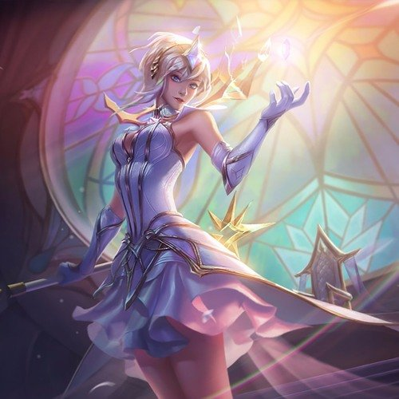

1- Lux Elementalista
Sem dúvidas é a skin mais top que tem pois você fica misturando os elementos com ela, podendo virar outros elementos muito legais.
Sem dúvidas é a skin mais top que tem pois você fica misturando os elementos com ela, podendo virar outros elementos muito legais.
Muito chave, ela anda de moto quando está correndo, acho incrível.
Infelizmente essa skin não existe de verdade, mas é a melhor skin já feita e eu preso pelo dia que a riot games coloque ela no jogo.
É um peixe que pesca kkkkkkkkkkkkkkkkk.
Sem palavras, skin bonita, skin bem feita, totalmente perfeita.